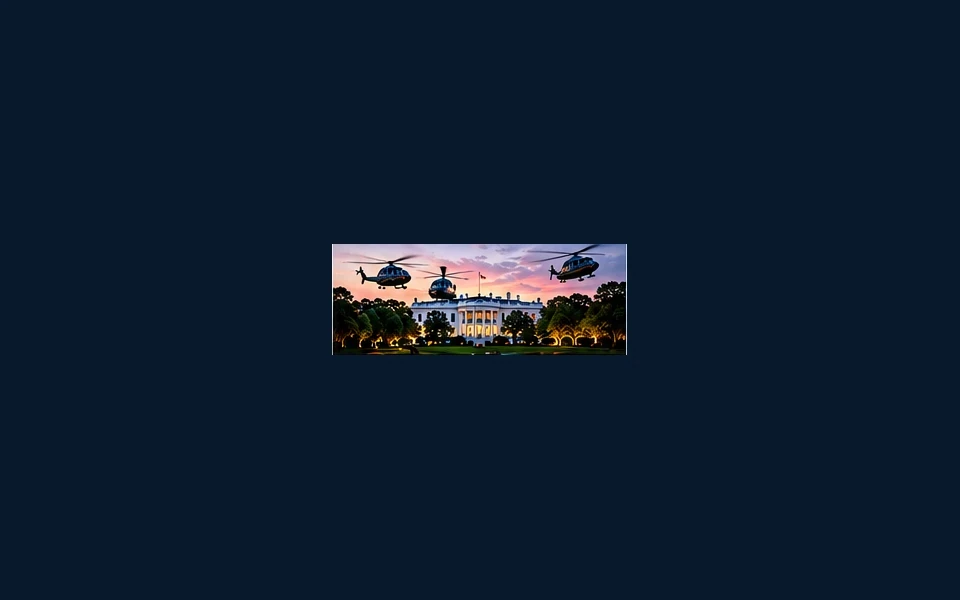

WHITE HOUSE PRESS ACCESS FIGHT: WHO GETS TO QUESTION THE PRESIDENT?

AI-generated illustrative image; not a documentary photograph.
A dispute over White House press access raises a fundamental issue: who decides which reporters can directly question the nation’s most powerful office? News organizations have challenged restrictions, while the administration maintains that it has authority to manage access and security.
The fight is bigger than credentials and seating arrangements. Press access can affect which questions reach the president and how quickly the public receives answers. At the same time, no outlet has an automatic entitlement to every briefing or event.
From a conservative perspective, accountability must apply consistently. The White House should face tough questions about spending, immigration and foreign policy—even when the questions come from friendly outlets. Critics of the administration also deserve a fair chance to press for answers.
The test is whether access rules are transparent, applied consistently and compatible with the public’s right to scrutinize its government.
Sources and context: TNS editorial analysis of the reported White House press-access dispute; legal claims remain contested. Original TNS reporting summary and editorial analysis. Published October 29, 2026.